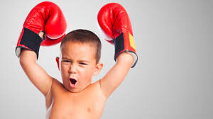
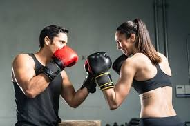

|
El BOXEO ES UN DEPORTE MARAVILLOSO Y TIENE MUCHOS BENEFICIOS
Uno de los principales alicientes para empezar con el boxeo es aprender una forma de defensa personal.
Las posibilidades de defenderse en el caso de una agresión se multiplican, lo que genera una sensación de confianza y bienestar.
Al ser un ejercicio aeróbico se quema gran cantidad de grasa debido al desgaste energético, alrededor de 750 calorías por
hora, aunque dependerá del tipo de entrenamiento y de la intensidad con la que se realice. Los ejercicios más adecuados para
quemar calorías con el boxeo son saltar a la cuerda, golpear el saco, los sprint corriendo, y los combates. |

|
|
LO IMPORTANTE DEL BOXEO
Durante años, el boxeo fue un deporte mayormente masculino y asociado a la pelea.
Nadie desconocía que su entrentamiento era intenso y que esos cuerpos esculpidos reflejaban
muchas bondades a nivel físico, pero sólo los que deseaban calzarse los guantes y subir al ring
se animaban a practicarlo. Pero esa percepción cambió y cada vez más gente lo elige como actividad
física sin considerar un intercambio de golpes con otro ser humano. Conocé los beneficios del
boxeo y sumate a la tendencia. |
|
- La activación del sistema cardiovascular hará que aumente la circulación sanguínea y se mejore
la eficiencia del sistema respiratorio, lo que provocará menos sensación de cansancio gracias al trabajo de resistencia.
- Se potencia el tono muscular gracias tanto a los entrenamientos, como a los combates. No obstante, si entrenas en un
gimnasio los resultados serán más alentadores que si se practica en casa, debido a los preparadores específicos, y a que
disponen de máquinas y material que conseguirá un tono muscular más equilibrado en todas las zonas del cuerpo.
- La práctica continuada del boxeo mejora la flexibilidad muscular gracias al constante movimientos que exige practicarlo.
- El boxeo dispara los reflejos cuando se realiza en combate porque enseña tanto a anticipar el movimiento del adversario,
como a esquivarlo o bloquearlo para protegerse mientras que se lanza un ataque, lo cual mejora la coordinación
y la velocidad mental para la toma de decisiones.
- En el combate en boxeo, una de las primeras cosas que se aprenden es a dosificar la energía para aguantar físicamente
en condiciones en todo el combate, ya que el cansancio llevaría consigo recibir más castigo del adversario.
- El tener que luchar en el boxeo, atacando y defendiendo constantemente, prepara psicológicamente al practicante para
mejorar su fortaleza mental para superar los momentos en los que no se está en plenitud durante la pelea.
- El boxeo es un deporte muy útil para liberar la tensión del día a día, ya que mediante el golpeo se descarga
y destensa el cuerpo mientras se reduce enormemente el estrés.
|

|